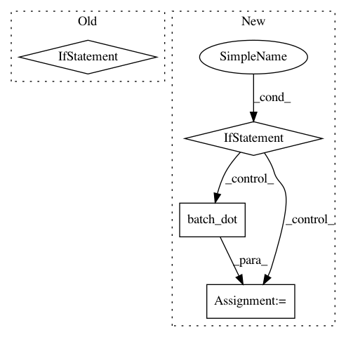

3ddc9b49dceed22c8559c0231a1c081dcb875ede,capsulelayers.py,CapsuleLayer,call,#CapsuleLayer#Any#Any#,105
Before Change
outputs = squash(K.sum(c * inputs_hat, 1, keepdims=True))
// last iteration needs not compute bias which will not be passed to the graph any more anyway.
if i != self.num_routing - 1:
// self.bias = K.update_add(self.bias, K.sum(inputs_hat * outputs, [0, -1], keepdims=True))
self.bias += K.sum(inputs_hat * outputs, -1, keepdims=True)
// tf.summary.histogram("BigBee", self.bias) // for debugging
// End: routing algorithm V2, static ------------------------------------------------------------//
return K.reshape(outputs, [-1, self.num_capsule, self.dim_vector])
def compute_output_shape(self, input_shape):
return tuple([None, self.num_capsule, self.dim_vector])
After Change
c = tf.nn.softmax(b, dim=1)
// At last iteration, use `inputs_hat` to compute `outputs` in order to backpropagate gradient
if i == self.num_routing - 1:
// c.shape = [batch_size, num_capsule, input_num_capsule]
// inputs_hat.shape=[None, num_capsule, input_num_capsule, dim_capsule]
// The first two dimensions as `batch` dimension,
// then matmal: [input_num_capsule] x [input_num_capsule, dim_capsule] -> [dim_capsule].
// outputs.shape=[None, num_capsule, dim_capsule]
outputs = squash(K.batch_dot(c, inputs_hat, [2, 2])) // [None, 10, 16]
else: // Otherwise, use `inputs_hat_stopped` to update `b`. No gradients flow on this path.
outputs = squash(K.batch_dot(c, inputs_hat_stopped, [2, 2]))
// outputs.shape = [None, num_capsule, dim_capsule]
// inputs_hat.shape=[None, num_capsule, input_num_capsule, dim_capsule]
// The first two dimensions as `batch` dimension,
// then matmal: [dim_capsule] x [input_num_capsule, dim_capsule]^T -> [input_num_capsule].
// b.shape=[batch_size, num_capsule, input_num_capsule]
b += K.batch_dot(outputs, inputs_hat_stopped, [2, 3])
// End: Routing algorithm -----------------------------------------------------------------------//
return outputs
def compute_output_shape(self, input_shape):
return tuple([None, self.num_capsule, self.dim_capsule])
In pattern: SUPERPATTERN
Frequency: 3
Non-data size: 4
Instances
Project Name: XifengGuo/CapsNet-Keras
Commit Name: 3ddc9b49dceed22c8559c0231a1c081dcb875ede
Time: 2017-11-18
Author: guoxifeng1990@163.com
File Name: capsulelayers.py
Class Name: CapsuleLayer
Method Name: call
Project Name: stellargraph/stellargraph
Commit Name: 9664d0b87ad8046ea1d1af7af78a3e022cc2da84
Time: 2020-05-24
Author: kieranricardo@hotmail.com
File Name: stellargraph/layer/appnp.py
Class Name: APPNPPropagationLayer
Method Name: call
Project Name: stellargraph/stellargraph
Commit Name: 56e6adb2773497506875c7cbd7a1fe6b5c59fb4c
Time: 2020-04-19
Author: Huon.Wilson@data61.csiro.au
File Name: stellargraph/layer/gcn.py
Class Name: GraphConvolution
Method Name: call